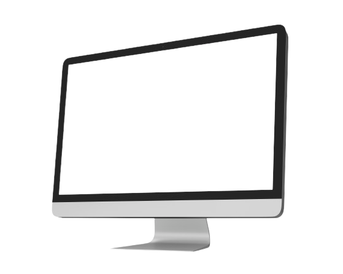

Monitor
Monitor คืออะไร
จอภาพเป็นอุปกรณ์ส่งออกอิเล็กทรอนิกส์ที่ใช้เพื่อแสดงข้อมูลที่ป้อนและประมวลผลบนคอมพิวเตอร์ การใช้งานหลักของจอภาพคือการแสดงข้อมูลรูปภาพ ข้อความ วิดีโอ และกราฟิกที่สร้างโดยคอมพิวเตอร์ผ่านการ์ดแสดงผลของคอมพิวเตอร์ สามารถเรียกได้ว่าเป็นอุปกรณ์ส่งออกหลักของอุปกรณ์คอมพิวเตอร์ จอภาพแรกเปิดตัวเมื่อวันที่ 1 มีนาคม พ.ศ. 2516
Monitor มีหน้าที่ทำอะไร
ฮาร์ดไดรฟ์คือส่วนประกอบฮาร์ดแวร์ที่เก็บเนื้อหาดิจิทัลทั้งหมดของคุณ เอกสาร รูปภาพ เพลง วิดีโอ โปรแกรม การตั้งค่าแอปพลิเคชัน และระบบปฏิบัติการของคุณแสดงถึงเนื้อหาดิจิทัลที่จัดเก็บไว้ในฮาร์ดไดรฟ์ ฮาร์ดไดรฟ์อาจเป็นภายนอกหรือภายในก็ได้ ทุกสิ่งที่จัดเก็บไว้ในฮาร์ดไดรฟ์จะวัดจากขนาดไฟล์ โดยทั่วไปเอกสาร (ข้อความ) จะมีขนาดเล็กมาก ในขณะที่รูปภาพมีขนาดใหญ่ เพลงมีขนาดใหญ่ขึ้น และวิดีโอมีขนาดใหญ่ที่สุด ฮาร์ดไดรฟ์จะกำหนดขนาดของไฟล์ดิจิทัลในรูปแบบเมกะไบต์ (MB) กิกะไบต์ (GB) และเทราไบต์ (TB)1
ประวัติของ Monitor
ต้นกล้าของเทคโนโลยีจอภาพ CRT ปลูกขึ้นในปี 1964 แม้ว่าจะไม่ใช่แค่จอคอมพิวเตอร์เท่านั้น แต่ยังเป็นจอแสดงผล CRT ที่สร้างโดยเครื่อง Uniscope 300 อีกด้วย ในปี พ.ศ. 2508 เทคโนโลยีหน้าจอสัมผัสถูกคิดค้นโดย E.A. จอห์นสัน. ในที่สุด ด้วยการถือกำเนิดของจอคอมพิวเตอร์เครื่องแรกที่ออกแบบด้วยเทคโนโลยี CRT และจอแสดงผลขาวดำ คอมพิวเตอร์ Xerox Alto ได้เปิดตัวในปี 1973 แม้ว่า George Samuel Hurst จะพัฒนาหน้าจอสัมผัสแบบต้านทานตัวแรกในปี 1975 แต่รุ่นนี้ก็ไม่ได้รับความนิยมจนกระทั่งปี 1982 ด้วยความตระหนักรู้ถึงความหลงใหลในหน้าจอคอมพิวเตอร์ที่เพิ่มมากขึ้น Apple I จึงไม่มีเวลาในการสร้างพอร์ตเอาต์พุตวิดีโอในตัวในปี 1976 เพื่อเป็นเครดิต คอมพิวเตอร์ที่มีหน้าจอวิดีโอ
